Satoru Gojo
Role: mentor of the cursed teenager Yuta Okkotsu at Tokyo Prefectural Jujutsu High School.
Satoru Gojo (五ご条じょう悟さとる Gojō Satoru?) is one of the main protagonists of the Jujutsu Kaisen series. He is a special grade jujutsu sorcerer and widely recognized as the strongest in the world. Satoru is the pride of the Gojo Family, the first person to inherit both the Limitless and the Six Eyes in four hundred years. He works as a teacher at the Tokyo Jujutsu High and uses his influence to protect and train strong young allies..

Yuji Itadori
Role: protagonist of Jujutsu Kaisen, Yuji Itadori is a headstrong lead character that certainly drives the plot forward with his nerves of steel. His bold physical strenght is balanced out with his lightheatred and compassionate personality..
Yuji Itadori (虎いた杖どり悠ゆう仁じ Itadori Yūji?) is the main protagonist of the Jujutsu Kaisen series. He is the son of Jin Itadori and Kaori Itadori. Yuji is the grandson of Wasuke Itadori who was living a normal life until he encountered Megumi and ate one of Sukuna's fingers. After becoming Sukuna's vessel, Yuji began attending Tokyo Jujutsu High alongside Megumi and Nobara as first-year students.

Masamichi Yaga
Role:Principal of Tokyo Jujutsu High and a grade 1 jujutsu sorcerer.
Masamichi Yaga (夜や蛾が正まさ道みち Yaga Masamichi?) is a character in Jujutsu Kaisen. He was the Principal of Tokyo Jujutsu High and a grade 1 jujutsu sorcerer. He was a cursed corpse user as well as Panda's creator and father. Prior to becoming Principal sometime after 2006, Masamichi was a second-year teacher to Satoru Gojo, Suguru Geto, and Shoko Ieiri..

Kiyotaka Ijichi
Role: assistant director of Tokyo Jujutsu High
Kiyotaka Ijichi (伊い地じ知ち潔きよ高たか Ijichi Kiyotaka?) is a character in the Jujutsu Kaisen series. He is the assistant director at Tokyo Jujutsu High..
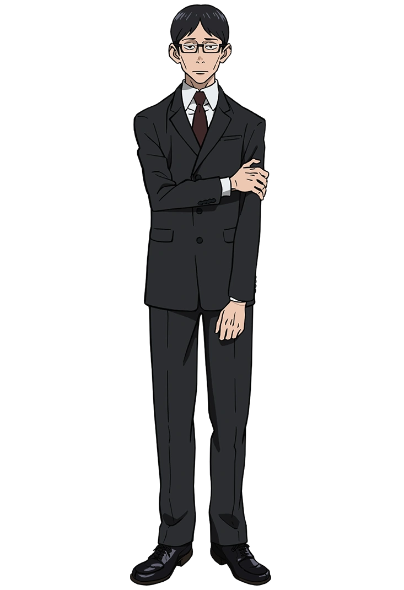
Megumi Fushiguro
Role:deuteragonist of the popular 2018 dark fantasy anime and manga series, Jujutsu Kaisen..
Megumi Fushiguro (伏ふし黒ぐろ恵めぐみ Fushiguro Megumi?) is the deuteragonist of the Jujutsu Kaisen series. He is a grade 2 jujutsu sorcerer and first-year student at Tokyo Jujutsu High alongside Yuji Itadori and Nobara Kugisaki. Megumi is the step-brother of Tsumiki Fushiguro and as the son of Toji Fushiguro, Megumi is also a descendant of the Zenin Family. Megumi was born outside the clan as Toji's trump card and was eventually found by Satoru Gojo, who mentored him and enrolled him at Jujutsu High as his student.
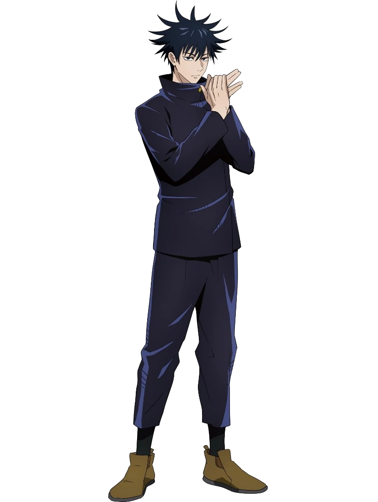
Nobara Kugisaki
Role:deuteragonist of the popular 2018 dark fantasy anime and manga series, Jujutsu Kaisen.
Nobara Kugisaki (釘くぎ崎さき野の薔ば薇ら Kugisaki Nobara?) is the tritagonist of the Jujutsu Kaisen series. She is a first-year student and grade 3 jujutsu sorcerer at Tokyo Jujutsu High studying under Satoru Gojo alongside Yuji and Megumi.
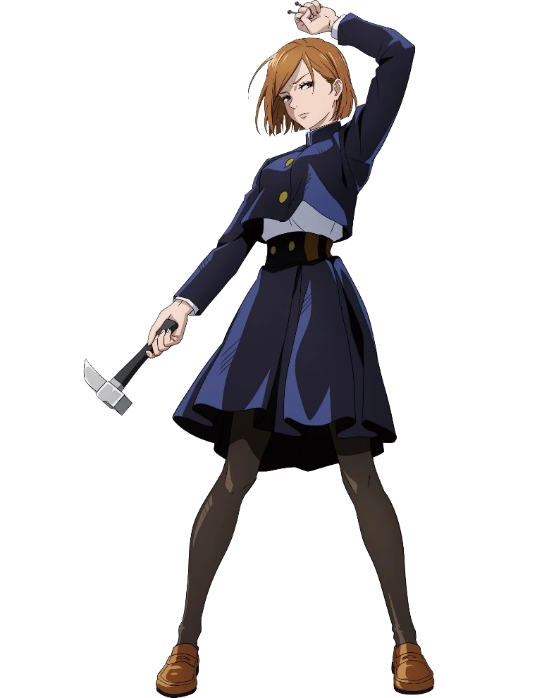
Maki Zenin
Role: major supporting character in Jujutsu Kaisen and one of the main protagonists of its prequel, Jujutsu Kaisen 0: Jujutsu High.
Maki Zenin (禪ぜん院いん真ま希き Zen'in Maki?) is a major supporting character in Jujutsu Kaisen and one of the main protagonists of its prequel, Jujutsu Kaisen 0: Jujutsu High. She is currently a second-year at Tokyo Jujutsu High. Daughter of Ogi Zenin and the elder twin sister of Mai Zenin, Maki was born in the Zenin Family.
Born a non-sorcerer in one of the Big Three Sorcerer Families, Maki was constantly mistreated and felt compelled to expel herself from the Zenin clan. She aspires to be a great jujutsu sorcerer to spite her family, working closely with her friends Panda and Toge Inumaki, while also serving as a role model to the first-year students.
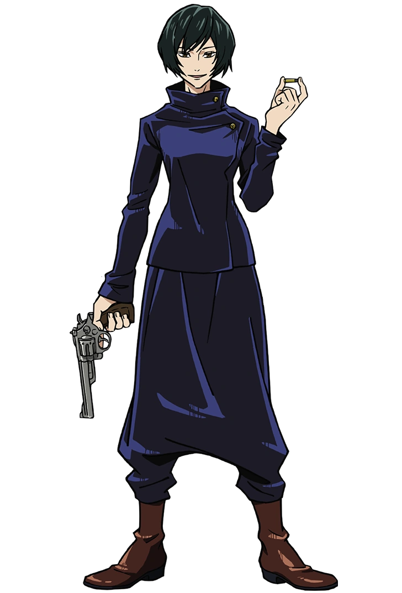
Toge Inumaki
Role: supporting character in the popular 2018 dark fantasy anime and manga series, Jujutsu Kaisen and a major character in its prequel, Jujutsu Kaisen: 0. He is the descendant of the Inumaki family born with a powerful cursed technique: Cursed Speech..
Toge Inumaki (狗いぬ巻まき棘とげ Inumaki Toge?) is a major supporting character in Jujutsu Kaisen and one of the main protagonists of its prequel, Jujutsu Kaisen 0: Jujutsu High. He is a descendant of the Inumaki clan and has inherited the clan's cursed speech, which he's developed his own unique speech pattern for in order to avoid cursing others. Toge is currently a semi-grade 1 jujutsu sorcerer and second-year at Tokyo Jujutsu High alongside his classmates Yuta, Maki, and Panda..
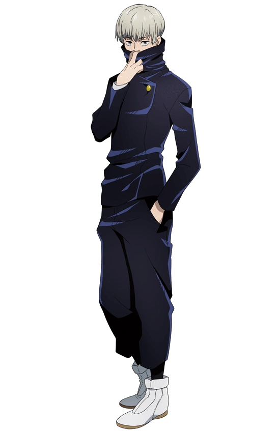
Panda
Role: a fully independent and sentient Cursed Corpse.
Panda (パンダ Panda?) is a major supporting character in Jujutsu Kaisen and one of the main protagonists of its prequel, Jujutsu Kaisen 0: Jujutsu High. Panda is not an actual panda, he's an Abrupt Mutated Cursed Corpse created by Masamichi Yaga. He attends Jujutsu High as a second-year student along with Maki, Toge, and Yuta.

Yuta Okkotsu
Role: the protagonist of Tokyo Metropolitan Curse Technical School.
Yuta Okkotsu (乙おっ骨こつ憂ゆう太た Okkotsu Yūta?) is a major supporting character in the Jujutsu Kaisen series and the main protagonist of its prequel series, Jujutsu Kaisen 0: Jujutsu High. He was initially a special grade cursed human haunted by his late childhood friend, Rika Orimoto. Satoru Gojo mentored Yuta and enrolled him at Tokyo Jujutsu High.
Yuta is currently a second-year student at Jujutsu High where he works as a jujutsu sorcerer. He was training overseas in Africa with Miguel until after the Shibuya Incident when he returned to Tokyo
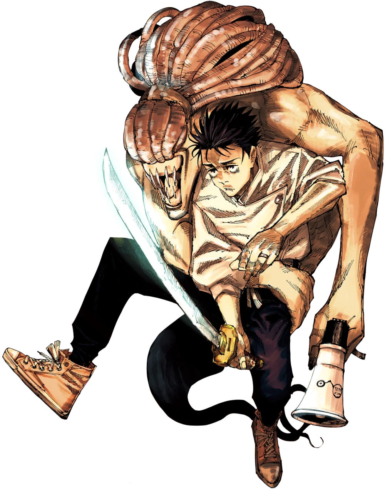
Kinji Hakari
Role: third-year student at Tokyo Jujutsu High who is currently suspended for clashing with authority. .
Kinji Hakari (秤はかり金きん次じ Hakari Kinji?) is a character in the Jujutsu Kaisen series. He is a third-year student at Tokyo Jujutsu High who is currently suspended for clashing with authority. While away from the school, Kinji is running the Gachinko Fight Club, a venue for hand-to-hand combat between sorcerers for money.
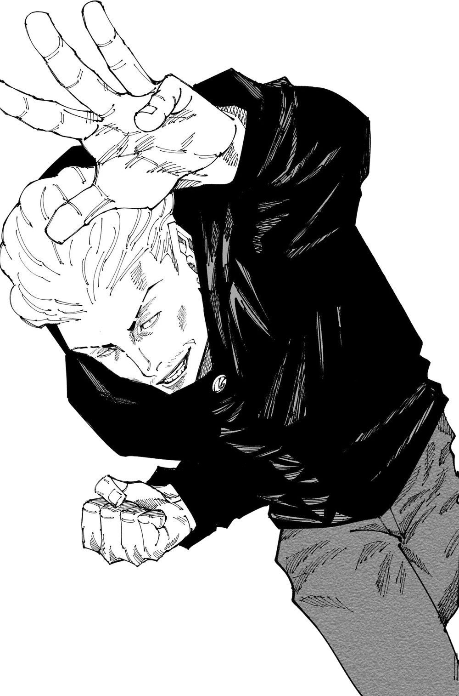
Kirara Hoshi
Role:third-year student at Tokyo Jujutsu High who is currently suspended for clashing with authority. .
Kirara Hoshi (星ほし綺羅羅きらら Hoshi Kirara?) is a character in the Jujutsu Kaisen series. They are a third-year student at Tokyo Jujutsu High but are currently away from school following Kinji Hakari's suspension. Kirara helps him run the Gachinko Fight Club, which hosts hand-to-hand combat between sorcerers for money.
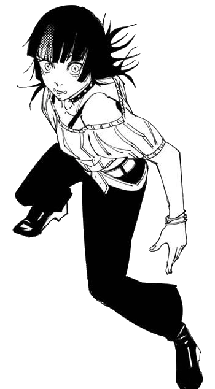
Yoshinobu Gakuganji
Role: principal at Kyoto Jujutsu High and a member of the jujutsu higher-ups. .
Yoshinobu Gakuganji (楽がく巌がん寺じ嘉よし伸のぶ Gakuganji Yoshinobu?) is a character in the Jujutsu Kaisen series. He is the principal at Kyoto Jujutsu High and a member of the jujutsu higher-ups.
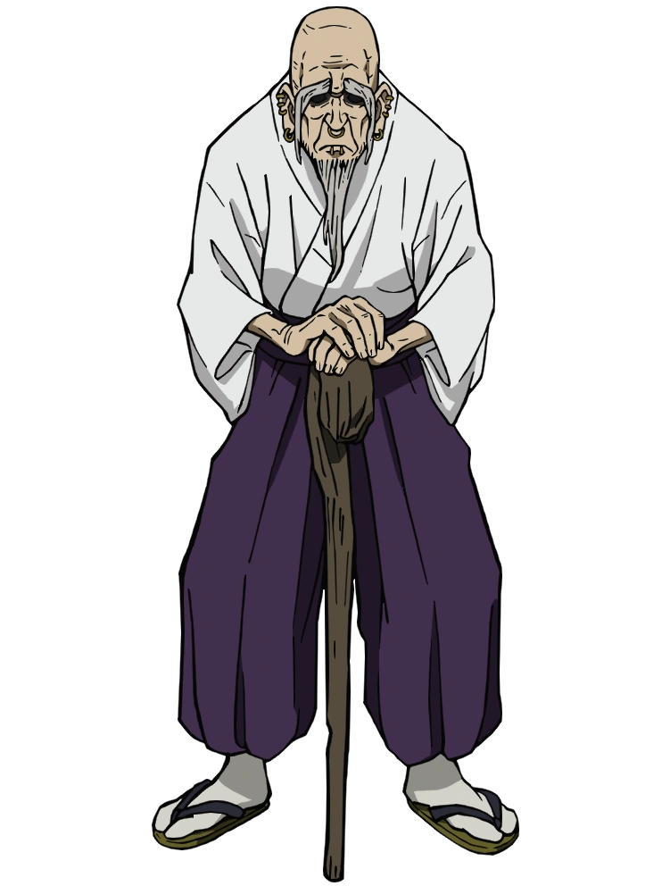
Mai Zenin
Role:skilled shooter from the Zenin clan .
Mai Zenin (禪ぜん院いん真ま依い Zen'in Mai?) is a character in the Jujutsu Kaisen series. She was a second-year at student at Kyoto Jujutsu High, member of the Zenin clan, and the younger twin sister of Maki Zenin.
Kasumi Miwa
Role: support character .
Kasumi Miwa (三み輪わ霞かすみ Miwa Kasumi?) is a character in the Jujutsu Kaisen series. She is a second-year at Kyoto Jujutsu High.

Noritoshi Kamo
Role: The current Noritoshi Kamo, a third-year student at Jujutsu High, is a likable character who seeks to bridge the gap between the Big Three Families..
Noritoshi Kamo (加か茂も憲のり紀とし Kamo Noritōshi?) is a character in Jujutsu Kaisen. He is a third-year at Kyoto Jujutsu High and former heir to the Kamo clan.
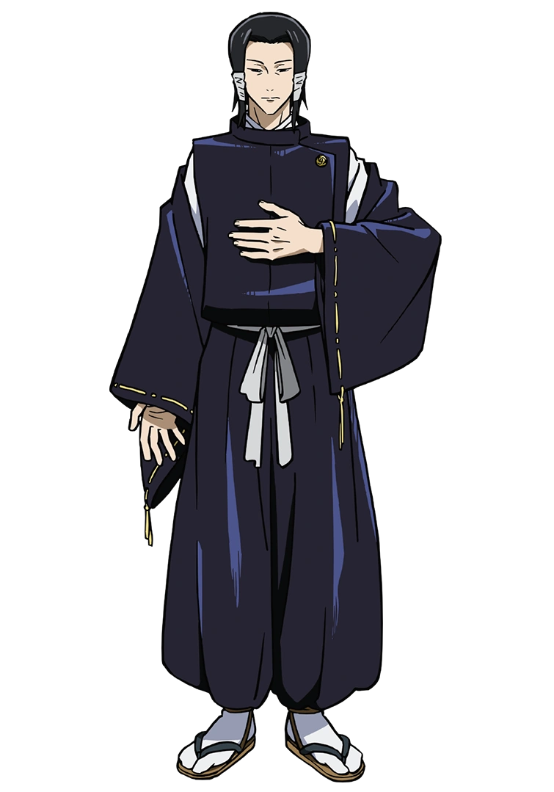
Aoi Todo
Role: The current Noritoshi Kamo, a third-year student at Jujutsu High, is a likable character who seeks to bridge the gap between the Big Three Families. His strongest power is Blood Manipulation, which allows him to control and manipulate blood for combat..
Aoi Todo (東とう堂どう葵あおい Tōdō Aoi?) is a supporting character in the Jujutsu Kaisen series. He is a third-year student at Kyoto Jujutsu High School and a grade 1 jujutsu sorcerer. He was mentored by Yuki Tsukumo in his youth and considers Yuji Itadori his best friend.
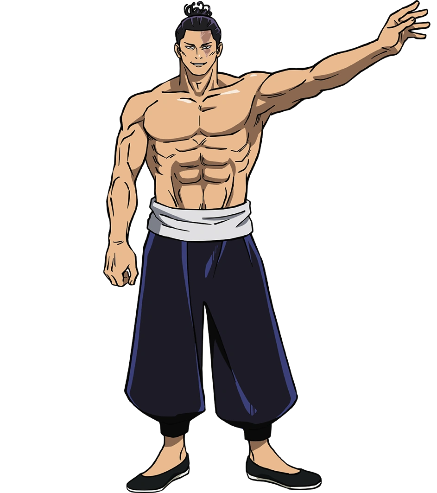
Momo Nishimiya
Role: She is a third year student at the Kyoto Jujutsu High School and is considered a semi-grade 2 jujutsu sorcerer.
Momo Nishimiya (西にし宮みや桃もも Nishimiya Momo?) is a character in the Jujutsu Kaisen series. She is a third-year student at Kyoto Jujutsu High and a semi-grade 2 jujutsu sorcerer.
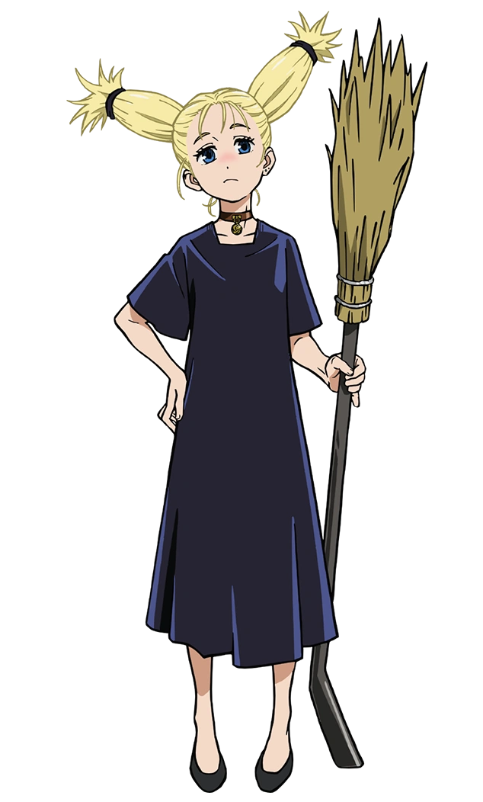
Sukuna
Role:legendary sorcerer during the Golden age of jujutsu, Sukuna was feared by most of the powerful sorcerers and was able to defeat and kill thousands of jujutsu sorcerers who dared cross his path. This left many authority figures afraid of him while also earning himself the title - strongest sorcerer in history .
Ryomen Sukuna (両りょう面めん宿すく儺な Ryōmen Sukuna?), more often referred to as simply Sukuna (宿すく儺な Sukuna?), is the strongest jujutsu sorcerer from a thousand years ago. Regarded as the undisputed King of Curses (呪のろいの王おう Noroi no Ō?), Sukuna is one of the primary antagonists of the Jujutsu Kaisen series.
According to legend, Sukuna was an Imaginary Demon (仮か想そうの鬼き神じん Kasō no Kijin?) during the Heian Era but in truth he was a sorcerer also known as the Disgraced One (堕だ天てん Daten?). Jujutsu sorcerers of the Golden Age of Jujutsu gave their all against him but ultimately fell one after another. Sukuna existed throughout the ages by transforming into a cursed object after death, a state where he split his power into twenty indestructible fingers.
Sukuna was incarnated in June 2018 when Yuji Itadori consumed one of his fingers. Sukuna was trapped inside Yuji's body and was rarely in control until he managed to transfer his soul into the body of Megumi Fushiguro.
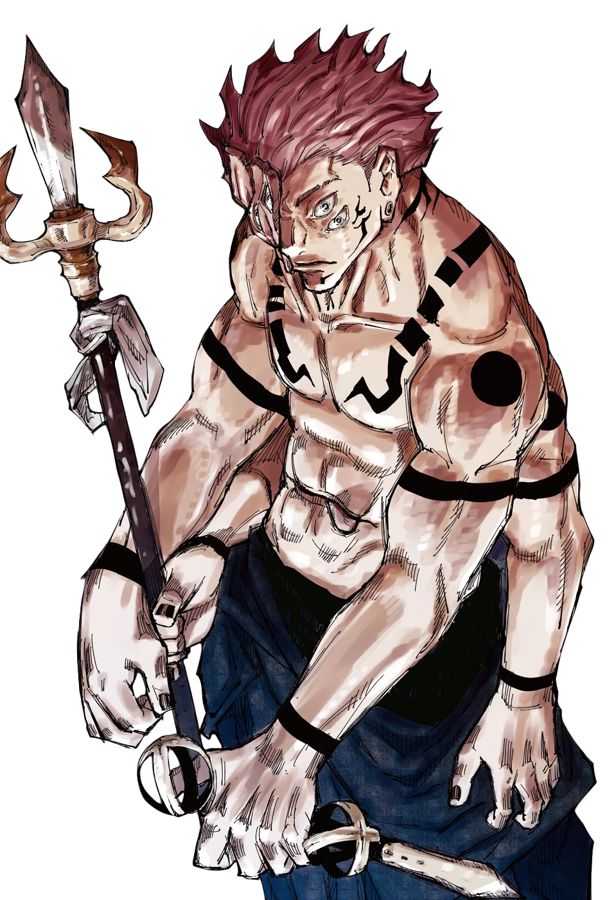
Kento Nanami
Role:He was a grade 1 sorcerer and the mentor of Yuji Itadori. He graduated from Jujutsu High before started working as a salaryman and returned four years after, to resume his career as a jujutsu sorcerer and also became the mentor of Yuji Itadori. .
Kento Nanami (七なな海み建けん人と Nanami Kento?) is a supporting character in Jujutsu Kaisen. He was a former student of Tokyo Jujutsu High where he was an underclassman of Satoru Gojo and Suguru Geto. Nanami initially left Jujutsu High after graduating to become a salaryman, but returned four years later to continue working as a jujutsu sorcerer.
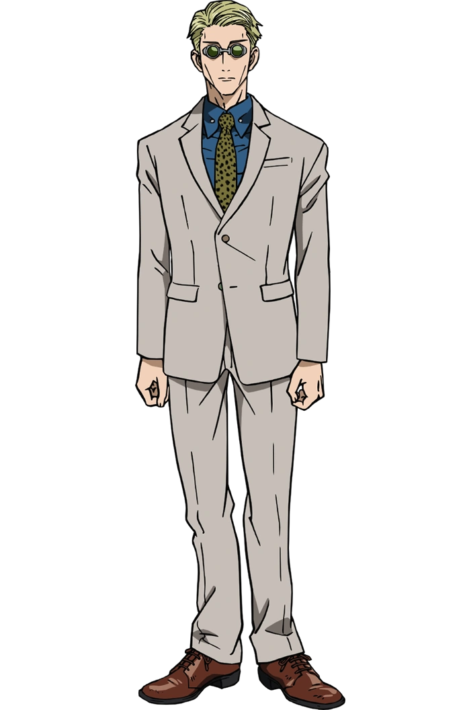
Takuma Ino
Role: alumnus of Jujutsu School and the protege of Nanami Kento. He is a Grade 2 sorcerer and currently waiting for his promotion to Grade 1..
Takuma Ino (猪い野の琢たく真ま Ino Takuma?) is a supporting character in the Jujutsu Kaisen series. Ino is a grade 2 jujutsu sorcerer and a close associate of Kento Nanami who operates out of Tokyo Jujutsu High.
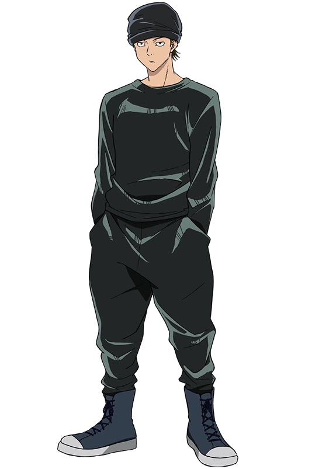
Mei Mei
Role: She is a grade 1 jujutsu sorcerer who works independently and only in exchange for money..
Mei Mei (冥めい冥めい Mei Mei?) is a supporting character in the Jujutsu Kaisen series. She is a grade 1 jujutsu sorcerer who works independently and only in exchange for money. She is also the older sister of Ui Ui and was a senpai of Satoru Gojo and Suguru Geto during their time at Jujutsu High
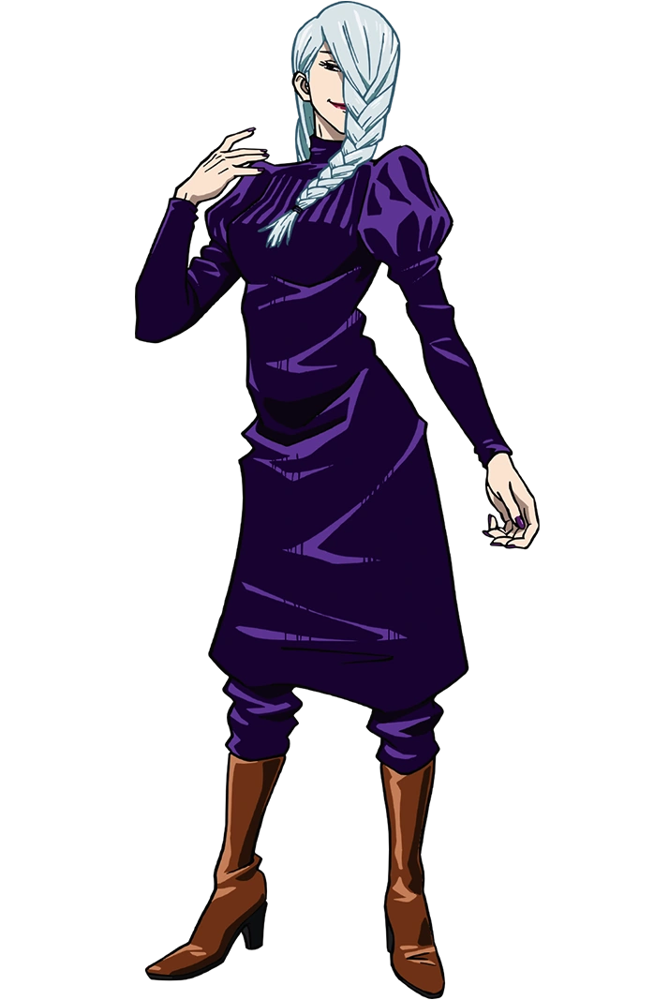
Yuki Tsukumo
Role: Yuki possesses elite combat instincts and is highly talented in jujutsu, capable of using her innate technique, barrier techniques, and domain expansion..
Yuki Tsukumo (九つ十く九も 由ゆ基き Tsukumo Yuki?) is a character in the Jujutsu Kaisen series. She is one of only four special grade jujutsu sorcerers.[1] Yuki is not aligned with Jujutsu High, so her reputation paints her as the only special grade sorcerer who doesn't take on missions. In truth, Yuki simply does not agree with the higher-ups' methods and works toward a curse-free world in her own way.
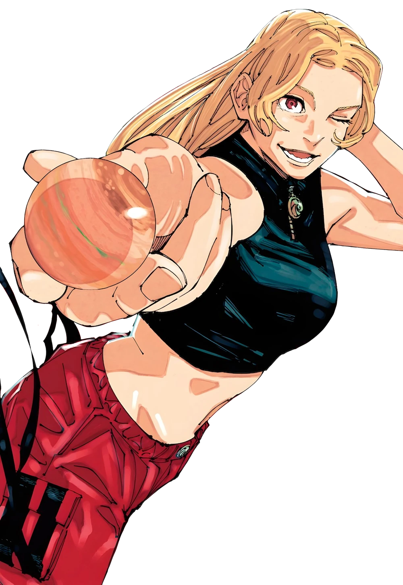
Naobito Zenin
Role: As the head of the Zenin clan and a special grade 1 sorcerer up until his death, Naobito was a highly regarded fighter throughout the jujutsu world..
Naobito Zenin (禪ぜん院いん直なお毘び人と Zen'in Naobito?) is a supporting character in the Jujutsu Kaisen series. He was a special grade 1 jujutsu sorcerer, the 26th head of the Zenin Family, and the father of Naoya Zenin.
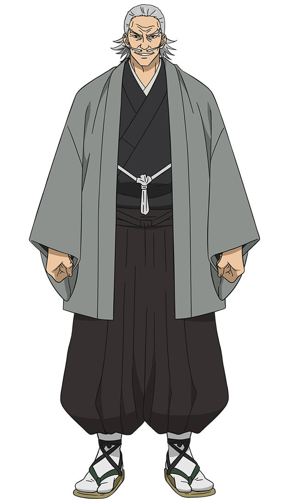
Hajime Kashimo
Role: one of the many sorcerers who made a deal with Kenjaku in ancient times to be reincarnated and participate in the Culling Games.
Hajime Kashimo (鹿紫雲かしも一はじめ Kashimo Hajime?) is a character in the Jujutsu Kaisen series. He is a jujutsu sorcerer from 400 years ago currently inhabiting the body of someone Kenjaku prepared as a vessel. Hajime is currently serving as one of the players participating in the Culling Game in search of fighting Sukuna.
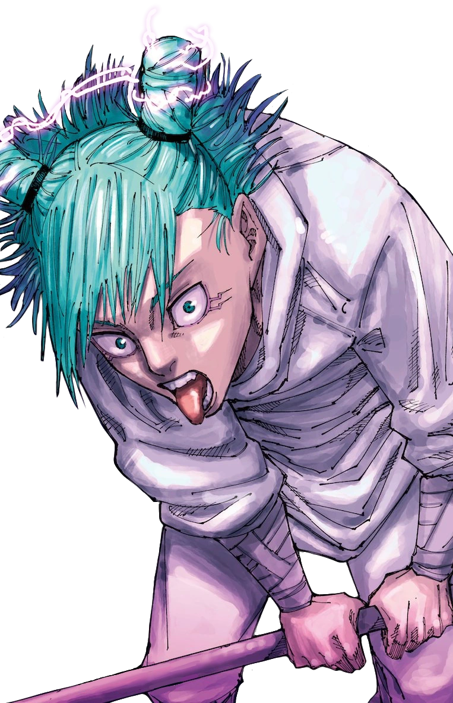
Mahito
Role:Mahito is one of the main antagonists of the Jujutsu Kaisen series along with “Suguru Geto.” An unregistered special grade cursed spirit. .
Mahito (真ま人ひと Mahito?) is one of the primary antagonists of the Jujutsu Kaisen series. He is an unregistered special grade cursed spirit allied with Pseudo-Geto. He is also the leader of his own group, consisting of Jogo, Hanami, and Dagon. His group's ultimate goal is the eradication of humanity and ultimately replacing the population with cursed spirits.
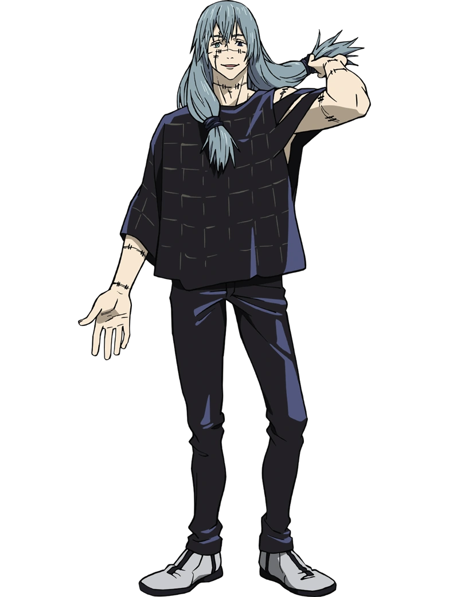
Jogo
Role: an unregistered special grade cursed spirit aligned with Mahito, Hanami, and Dagon..
Jogo (漏じょう瑚ご Jōgo?) is a major antagonist in the Jujutsu Kaisen series. He was an unregistered special grade cursed spirit aligned with Mahito, Hanami, and Dagon. Jogo believed curses were the true humans and desired a world where his kind dominated the earth.
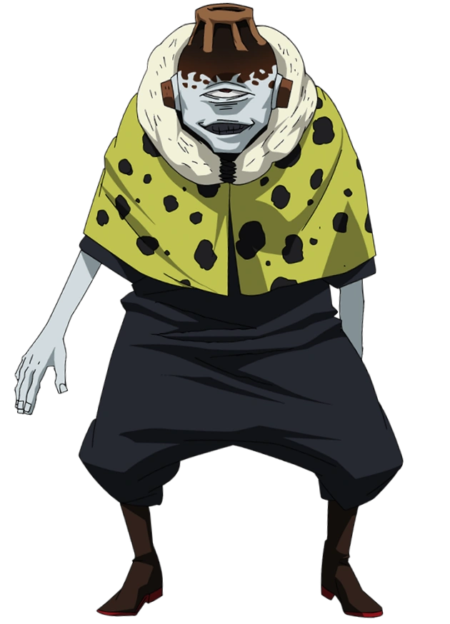
Hanami
Role: an antagonist in the Jujutsu Kaisen series. He was an unregistered special grade cursed spirit aligned with Jogo, Dagon, and Mahito..
Hanami (花はな御み Hanami?) is an antagonist in the Jujutsu Kaisen series. He was an unregistered special grade cursed spirit aligned with Jogo, Dagon, and Mahito. Hanami was born from the fear of land-based natural disasters and he desired to rid the earth of humanity because of their mistreatment of nature.
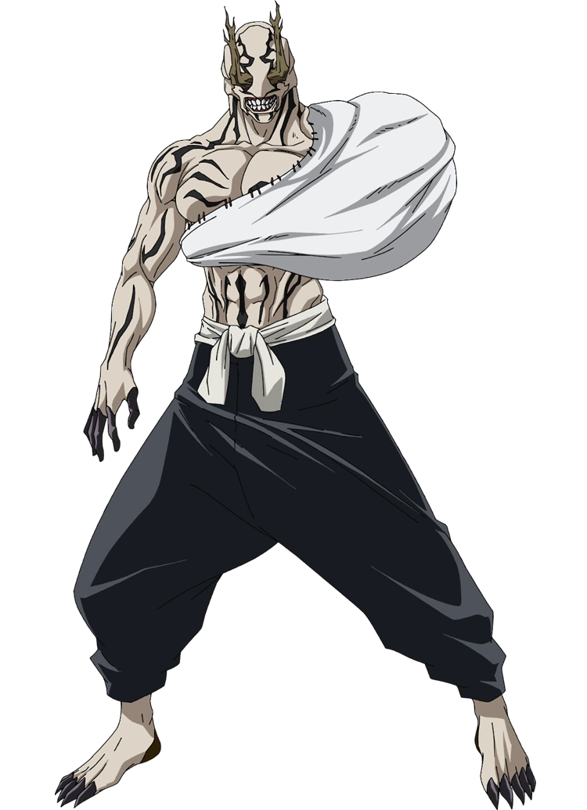
Dagon
Role: Rainbow Dragon is one of the strongest special grade Curses that have appeared in the Jujutsu Kaisen manga..
Dagon (陀だ艮ごん Dagon?) is an antagonist in the Jujutsu Kaisen series. He was an unregistered special grade cursed spirit aligned with Mahito, Jogo, and Hanami. Dagon was born from the fear of water-based natural disasters and existed as a cursed womb until he evolved during the Shibuya Incident.
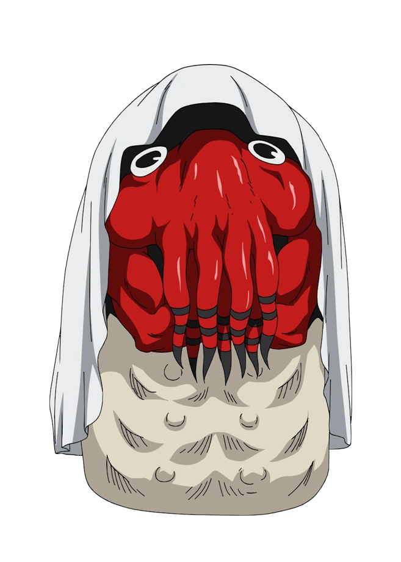
Finger Bearer
Role: act like regular curses and tend to linger at their point of origin and attacking any individual that enters their domain.
Finger Bearers (指ゆびの寄き主しゅ Yubi no Kishu?)[1] are a type of special grade cursed spirit that emerge from the cursed wombs spawned from when a cursed spirit eats and swallows one of Sukuna's fingers.
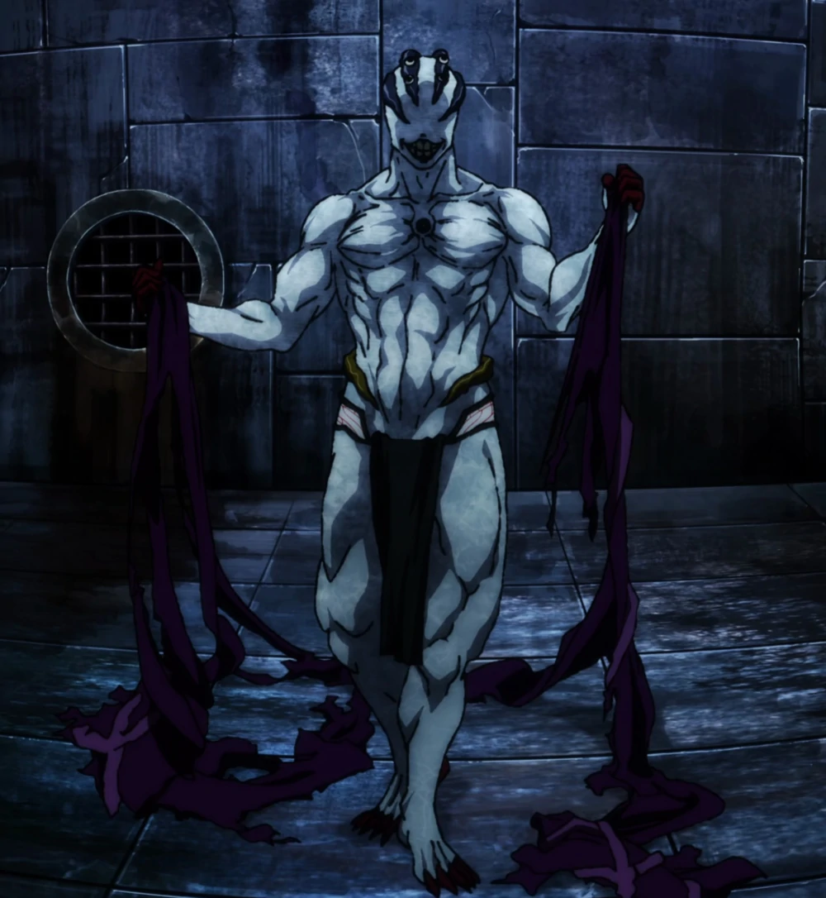
Uraume
Role: a powerful and mysterious curse user who served Sukuna, the King of Curses, a thousand years ago..
Uraume (裏梅うらうめ Uraume?) is a recurring antagonist in the Jujutsu Kaisen series. They are a curse user from a thousand years ago who is a direct subordinate to Sukuna. They aligned themselves with Kenjaku to seal Satoru Gojo and revive Sukuna.
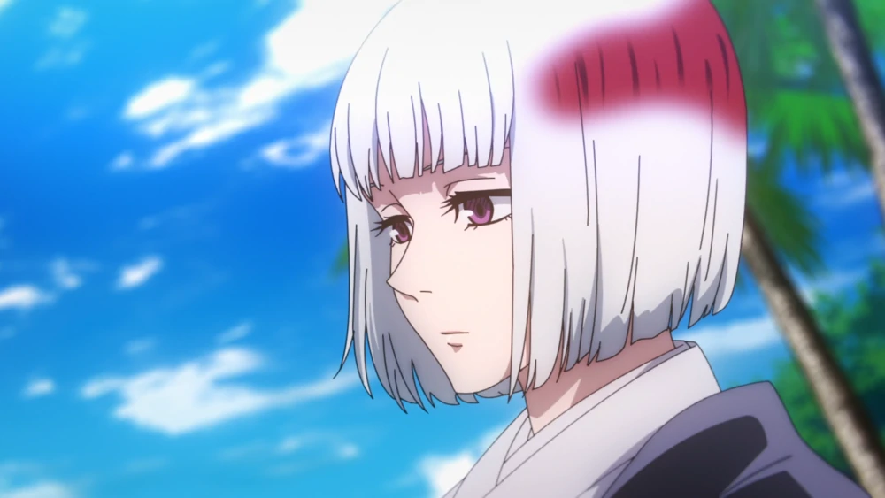
Suguru Geto
Role:a Special Grade Jujutsu Sorcerer, one of Masamichi Yaga's students, and a former classmate of Gojo and Shoko Ieiri. .
Suguru Geto (夏げ油とう傑すぐる Getō Suguru?) is an antagonist in both the Jujutsu Kaisen series and its prequel Jujutsu Kaisen 0: Jujutsu High. He was originally a student of Masamichi Yaga's alongside Satoru Gojo and Shoko Ieiri at Tokyo Jujutsu High. His experiences as a jujutsu sorcerer bred a deep hatred for non-sorcerers, leading to an incident where Suguru massacred over a hundred civilians in a single night. He was expelled from Jujutsu High and came to be known as the worst of all curse users
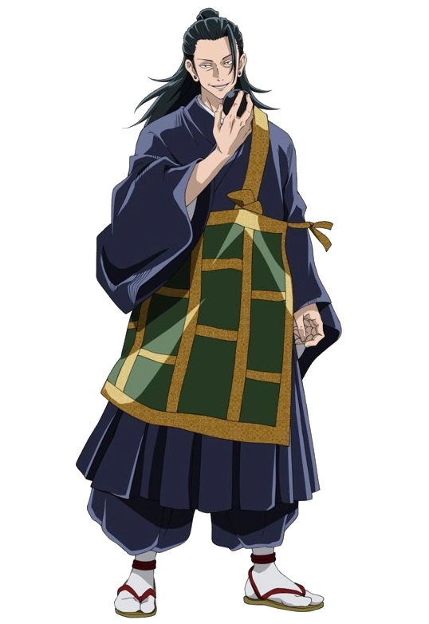
Mimiko Hasaba
Role: minor antagonists of the anime and manga series Jujutsu Kaisen first appearing in its prequel manga Jujutsu Kaisen 0 and its 2023 movie adaptation of the same name.
Mimiko Hasaba (枷はさ場ば美み々み子こ Hasaba Mimiko?) is an antagonist in the Jujutsu Kaisen series and its prequel Jujutsu Kaisen 0: Jujutsu High. She was the twin sister of Nanako Hasaba and they were both allies of Suguru Geto.
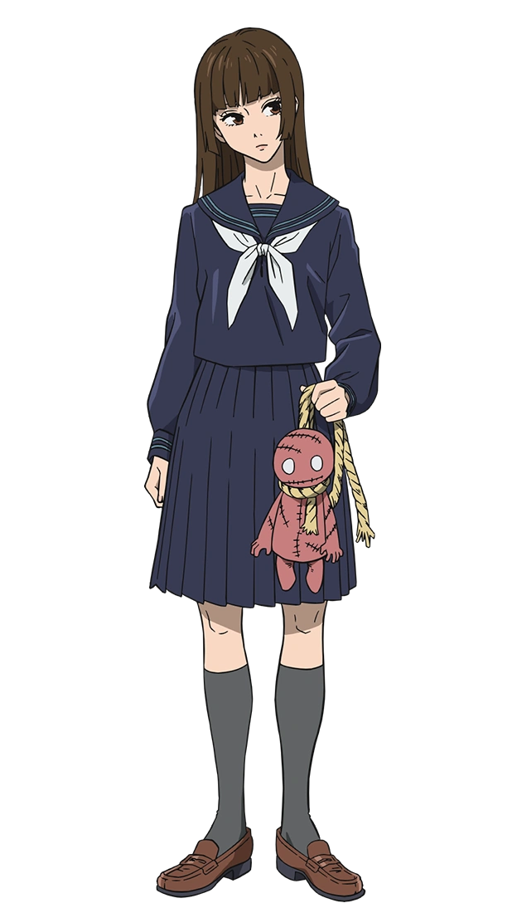
Junpei Yoshino
Role: he turned into a curse user after meeting Mahito.
Junpei Yoshino (吉よし野の順じゅん平ぺい Yoshino Junpei?) is a supporting character in the Vs. Mahito Arc of the Jujutsu Kaisen series. He was a high school student in Satozakura High School who befriended Yuji Itadori, but turned into a curse user after meeting Mahito.
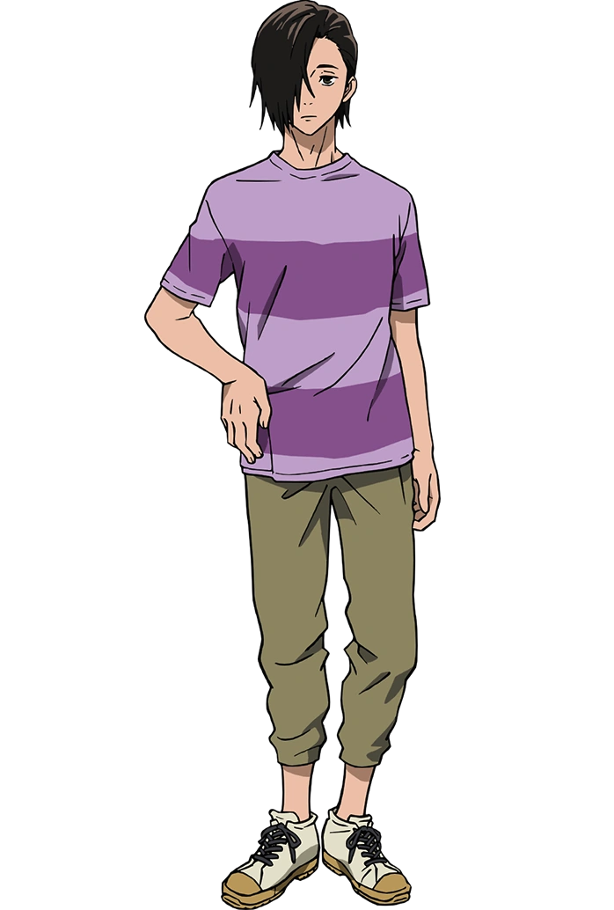
Setsuko Sasaki
Role: second-year student at Sugisawa Third Municipal High School and was a member of the school's Occult Research Club alongside her friends Yuji Itadori and Takeshi Iguchi..
Setsuko Sasaki (佐さ々さ木きせつこ Sasaki Setsuko?) is a minor character in the Jujutsu Kaisen series. She is second-year student at Sugisawa Third Municipal High School and was a member of the school's Occult Research Club alongside her friends Yuji Itadori and Takeshi Iguchi.
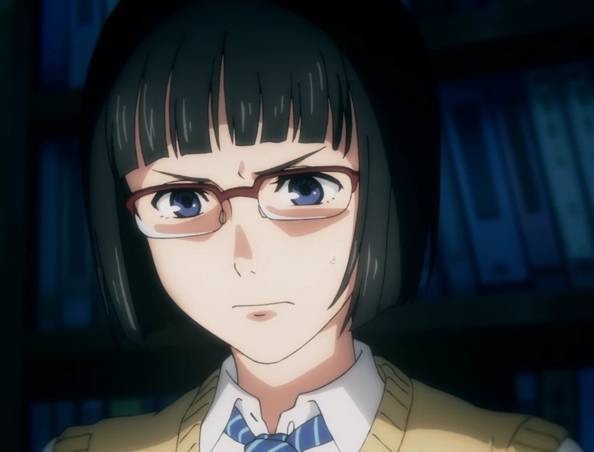
Wasuke Itadori
Role: Wasuke is shown to be a selfless, caring man who taught Yuji to help others..
Wasuke Itadori (虎いた杖どり倭わ助すけ Itadori Wasuke?) is a character in Jujutsu Kaisen. He is Yuji Itadori's grandfather.
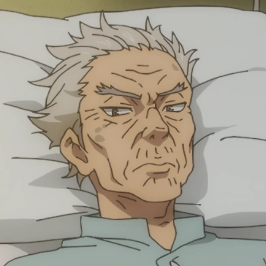
Rika Orimoto
Role: cursed spirit that remains with Yuta Okkotsu even after Rika Orimoto's soul was unbound from it. .
Rika Orimoto (祈おり本もと里り香か Orimoto Rika?) is a character in the Jujutsu Kaisen 0: Jujutsu High prequel series. She was the childhood friend of Yuta Okkotsu who tragically died when she was hit by a car. Her spirit was cursed, transforming her into a powerful special grade vengeful cursed spirit worthy of the moniker "Queen of Curses" (呪のろいの女じょ王おう Noroi no Joō?). Rika spent years haunting Yuta as a curse until he attended Tokyo Jujutsu High where he learned to unravel the curse on Rika's spirit, finally allowing her to pass on to the afterlife.
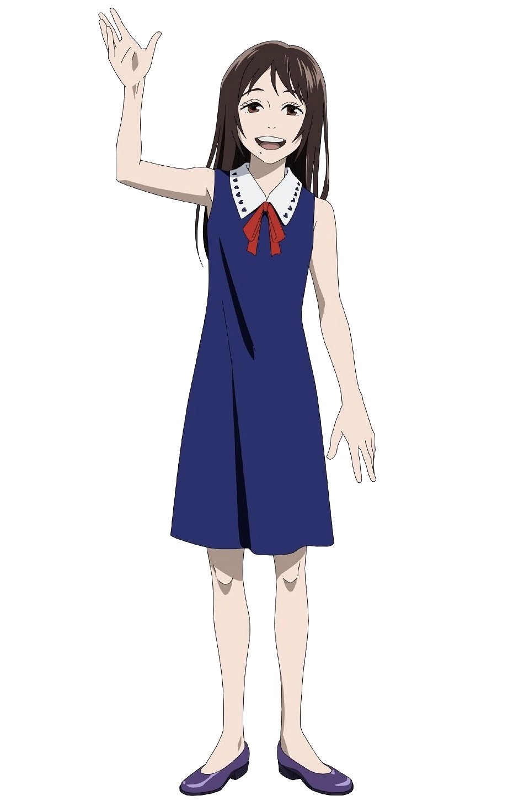